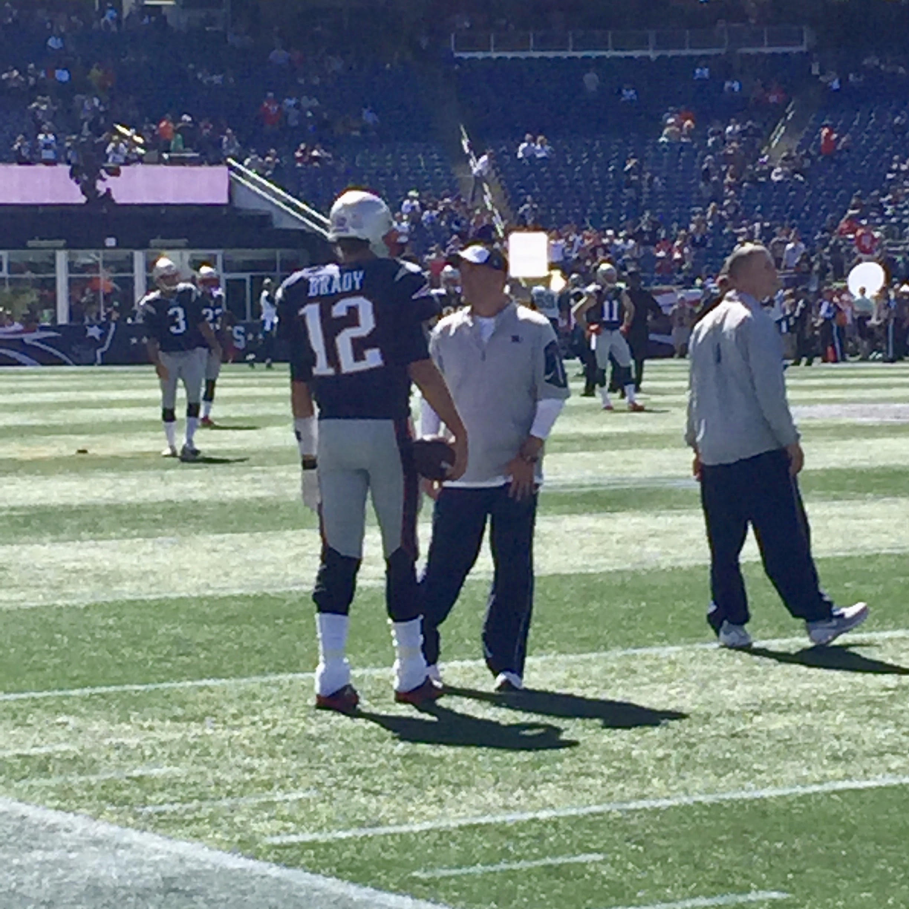
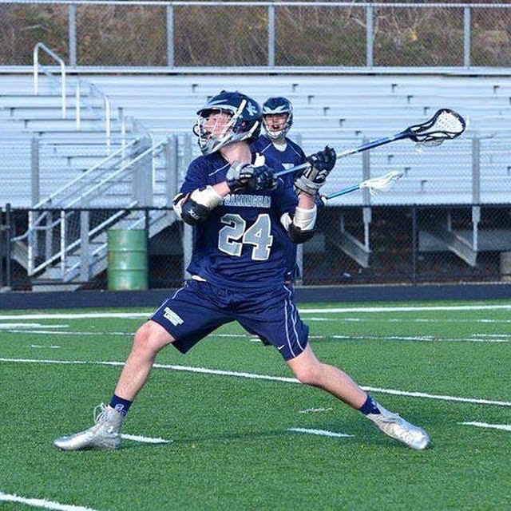

Links to:[Home][My blog][Umaine][Photo Gallary][Hobbies]
|  |  |
| I grew up watching the patriots and now I consider watching them one of my hobbies. Every Sunday (monday or thursday) I get to sit down and watch football. It is one of my hobbies because I watch football a lot and I am a very big patriots fan. | Lacrosse is another one of my hobbies because I have been playing my whole life. I started when I was four years old and I still play at nineteen years old. I love the sport mostly because my brother taught me how to play and it is something we have done together since I can remember. I dont play competitively anymore but I still play I fun summer leagues and such. |